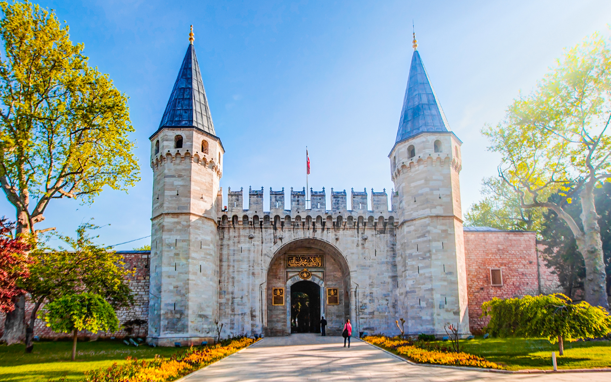

Topkapi Palace
Topkapi Palace is one of the symbols of the Ottoman Empire, which was once the center of Istanbul and
stands
out for its rich historical heritage. Topkapi Palace is a palace located in the Fatih district of Istanbul
today. It is located in the old city
walls of Istanbul and continues to be accepted as the center of Istanbul. Topkapi Palace, which has been
home
to the Ottoman dynasty for many years, was built twice in 1478. Over time, the sultans continued to live
here
by making additional sections to this sultan. With the construction of the Dolmabahçe Palace, the dynasty
moved to the Dolmabahçe Palace from the Topkapi Palace. Approximately 4 thousand people were living in
Topkapı Palace which is based on an area of 80 thousand square meters. Due to this reason, there are
many
rooms in the palace. The Topkapi Palace is one of the places where many tourists still see or desire to
see
with its architecture and various sections reflecting Ottoman conception. This palace of the dynasty after
the
establishment of the Republic of Turkey, gift ring was taken from the palace reflects the Turkish culture
dynasty's hand and began to serve as a museum.